Watch the sky change in NASA SPHEREx images
Type a star name or sky position, and the SPHEREx Flipbook turns every SPHEREx visit of that patch of sky into a video. Anything that moved or changed brightness stands out.
Around the video, the app shows difference pictures, Gaia DR3 and CatWISE2020 overlays, light curves, and spectra measured from the images in the 102 SPHEREx channels. Every image on this page is the tool's own output for the five targets of the NASA Space Apps Challenge 2026, Planet X and SPHEREx.
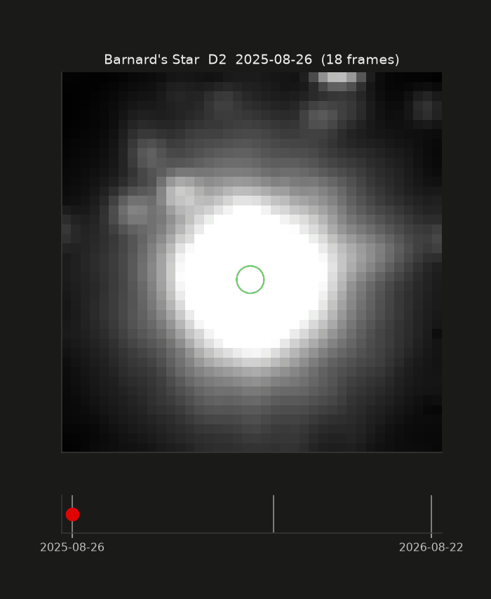
Run it on your computer
pipx install git+https://github.com/UTMOS12345/spherex_project.git
paramostOr with Docker: docker run -p 8501:8501 -v paramost-cache:/data/cache ghcr.io/utmos12345/paramost:1.0.0,
then open http://localhost:8501.
The first view of a target downloads its images from NASA's archive (IRSA), which takes about 1-3 minutes. After that it opens instantly from the local cache. There is no public instance: the app runs on your computer.
Barnard's Star
rendered for v1.0.0The fastest-moving star in the sky, about 11″ per year. In the difference picture it leaves a red/blue pair: red where it is now, blue where it was a year earlier. Every other star cancels out.
Limit: it is too bright for SPHEREx. Its core saturates, so the light curve and the spectrum are lower limits (triangles), measured from the unsaturated wings.

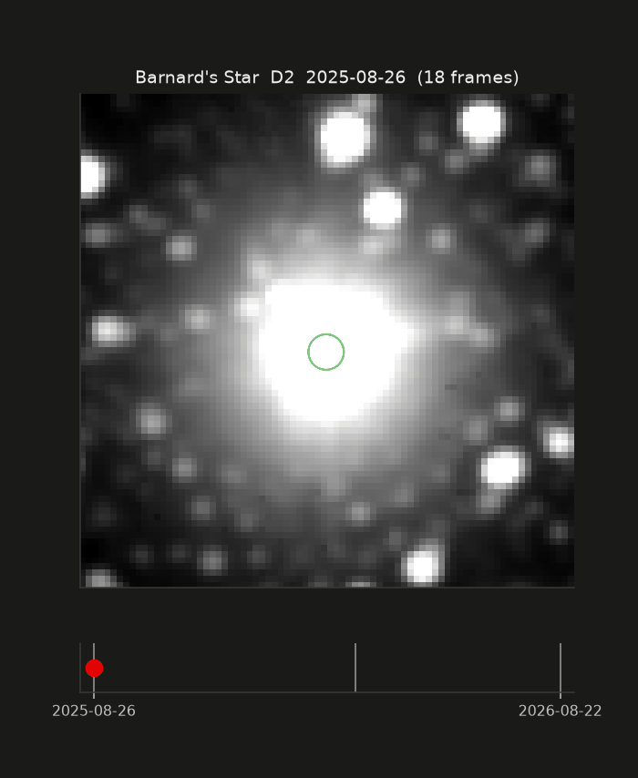

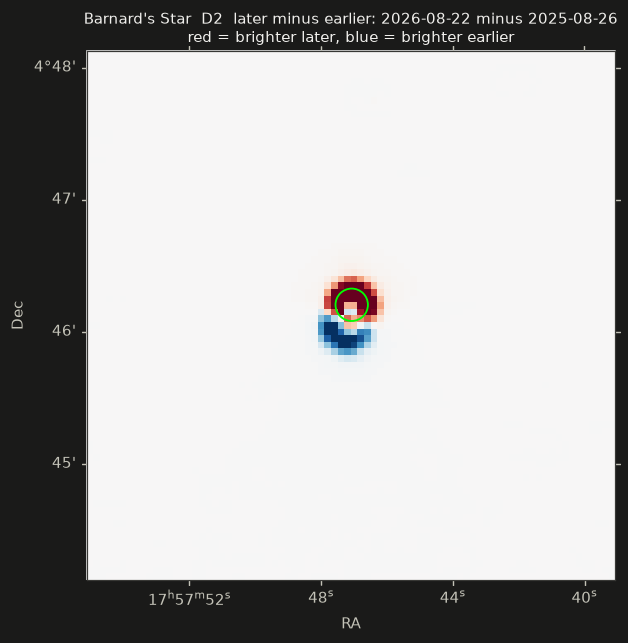

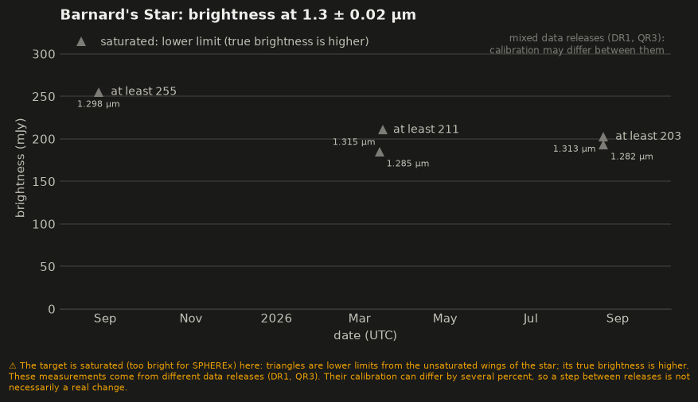

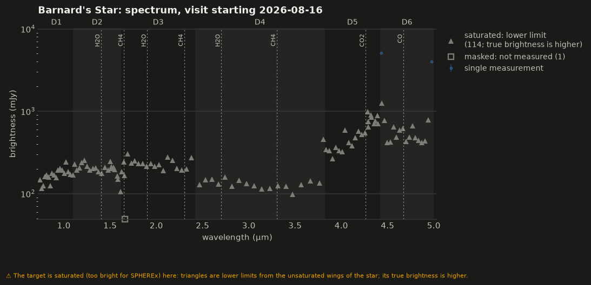
WISE 0855
rendered for v1.0.0The coldest known brown dwarf. It is invisible in visible light and only bright at 4-5 µm, and it moves about 8″ per year. Its catalogue position is from about 2010.4, not 2000.0, which the predicted position takes into account.
Limits: a G = 16.3 star 4-6″ away (WISE 0855 moves past it) falls inside the 12″ measuring circle. Below about 3 µm the spectrum is mostly that neighbour, and the figures say so. The first visit has only 3 frames ("few frames: unreliable"), and the light-curve points were measured at slightly different wavelengths (4.486-4.519 µm).

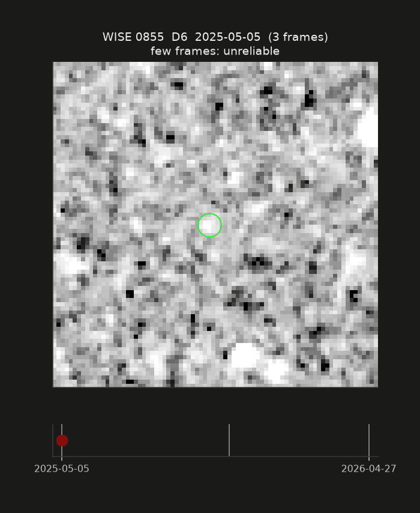

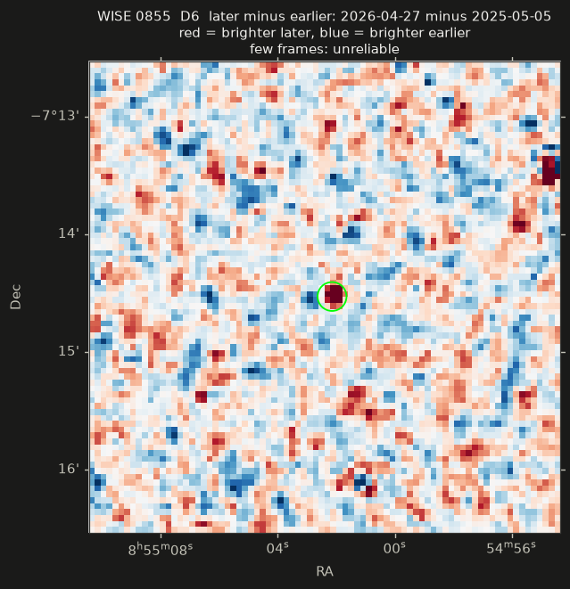

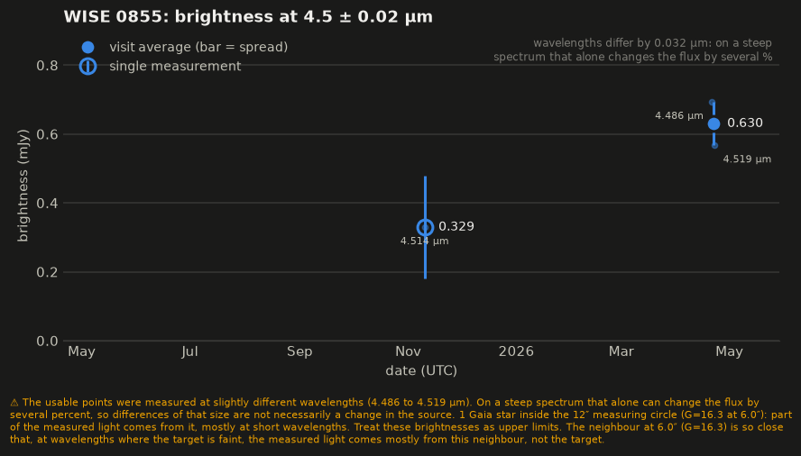

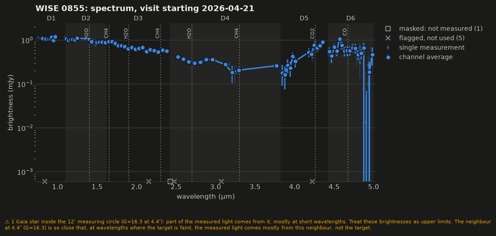
Epsilon Indi B
rendered 2026-11-14 (a7fc410)A nearby pair of brown dwarfs moving about 4.7″ per year. The motion shows as a red/blue pair in the difference picture at 4.2 µm.
Limit: the last light-curve point is 10% higher, and it is also the first QR3 point. But the step is explained by wavelength, not variability: that point was measured at 4.195 µm, the earlier ones at 4.211 and 4.213 µm, on a steep part of the spectrum. The figure shows each point's wavelength and warns about both the spread and the mixed releases.


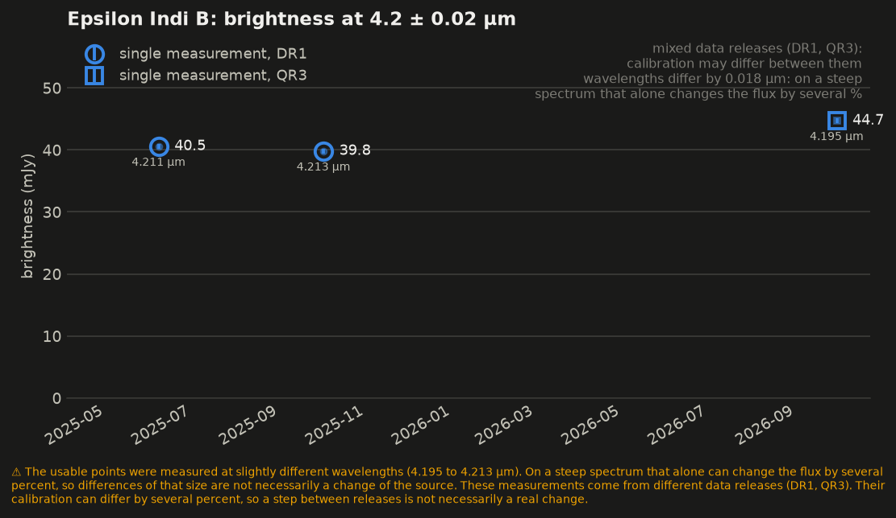

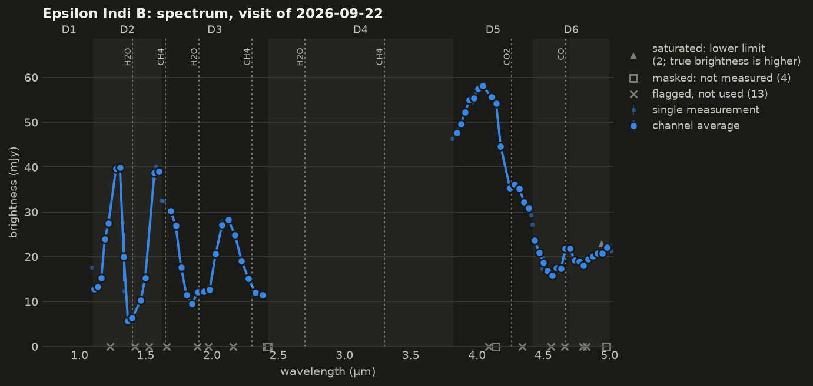
RW Aur
rendered 2026-11-14 (a7fc410)A young variable star. At 0.9 µm it measured 154 and 157 mJy in the first two visits, then 232 mJy, about 50% brighter. Field stars in the same frames stay within 1-3%, so the change is real. In the difference picture it is the one solid red source.
Limit: it saturates at longer wavelengths (1.6 µm), and the last point comes from another data release (QR3), whose calibration can differ by a few percent. That is far less than the 50% change.

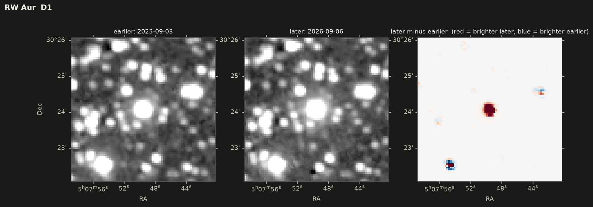

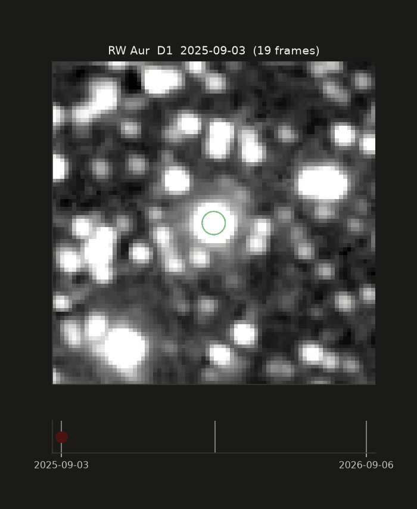

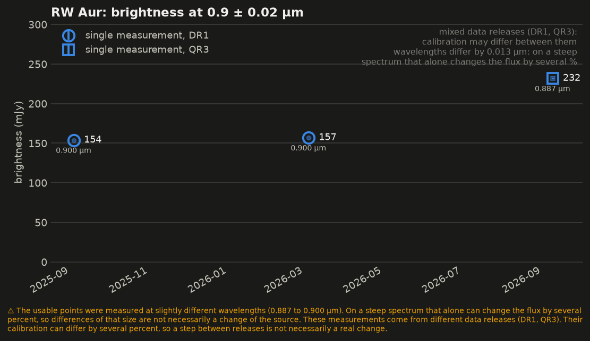

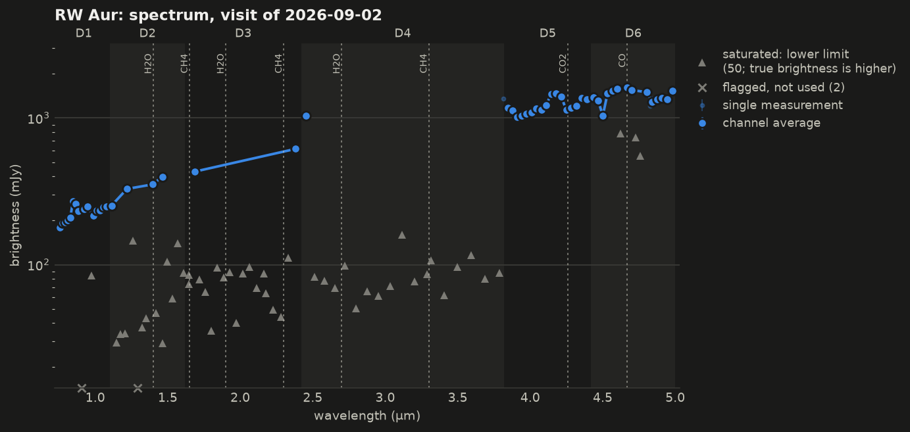
R Draconis
rendered 2026-11-14 (a7fc410)A pulsating red giant. Its brightness change shows in the difference picture, but only in the star's wings.
Limit: it is saturated in every channel measured. The pictures show a filled core, the light curve is a single lower limit (2,349 mJy at 2.196 µm, 2025-06-02), and the spectrum is lower limits.

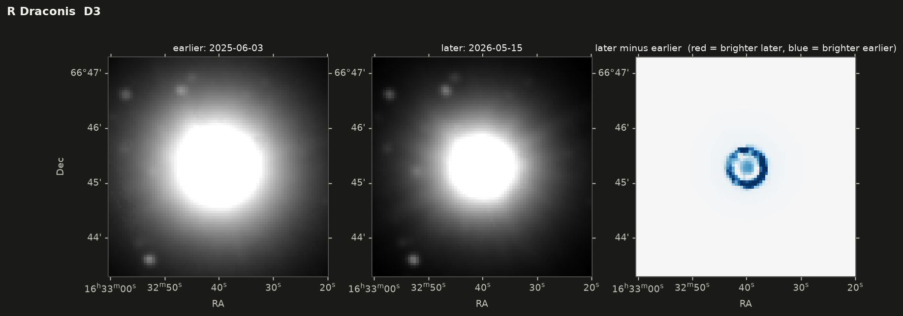

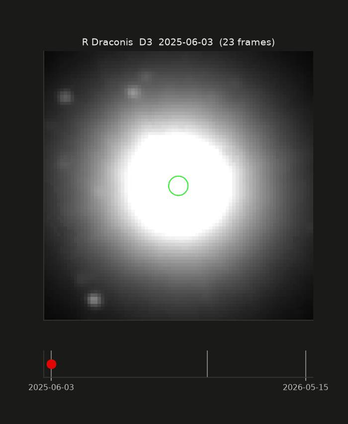

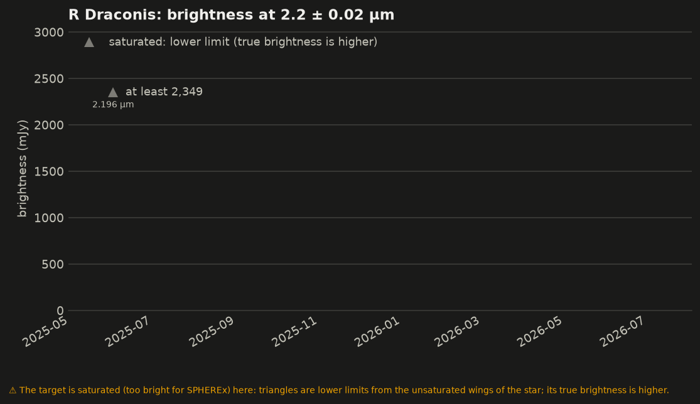

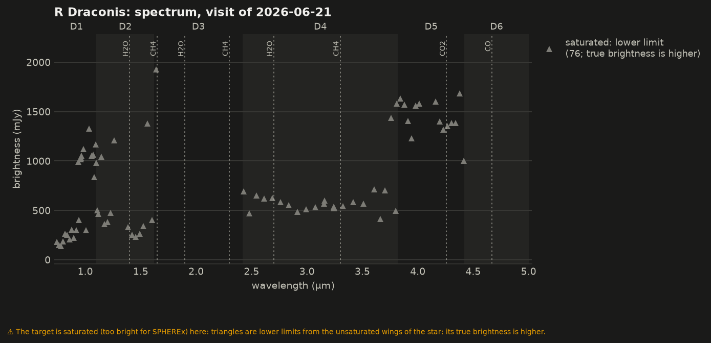
How it works
- Find: the name or coordinates are turned into a position, with proper motion when it is known. IRSA is searched for every SPHEREx frame covering it, in all data releases (DR before QR, newer before older).
- Download: small cutouts, six at a time, without the unused PSF layer (93% smaller), into a local cache.
- Clean: the zodiacal light is subtracted and flagged pixels are masked. Both FLAGS
formats are read (QR2's
MP_keywords, and QR3/DR1'sMSKNkeywords). Saturated stars are handled so they don't become holes. - Stack: each visit is put on one fixed sky grid, with a 4-sigma clipped mean, so one bad frame cannot make a fake source. The plain average is kept as an option.
- Compare and measure: difference pictures, catalogue overlays, light curves at one wavelength, and spectra binned into the 102 channels, each with its caveats written on the figure.
- Save: results are saved on disk, so a target opens in seconds the next time (WISE 0855: 3.4 s instead of 11.3 s).

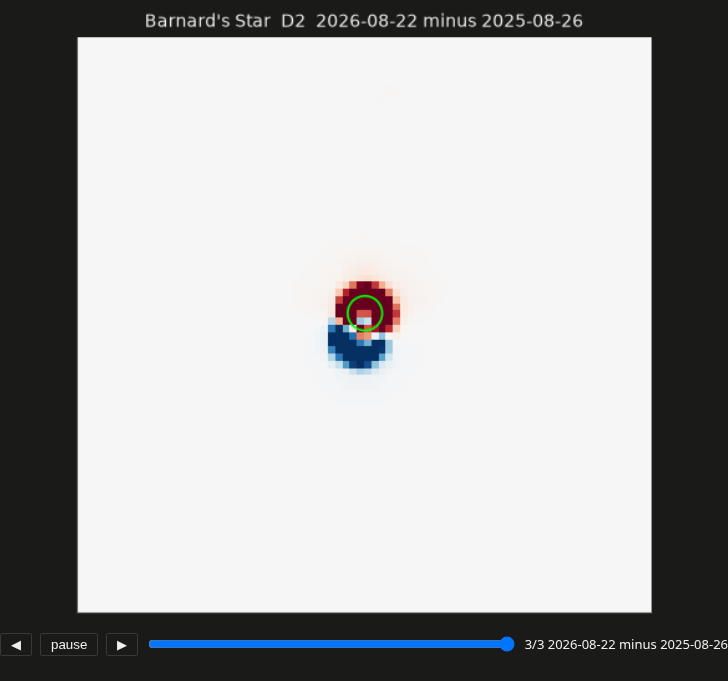

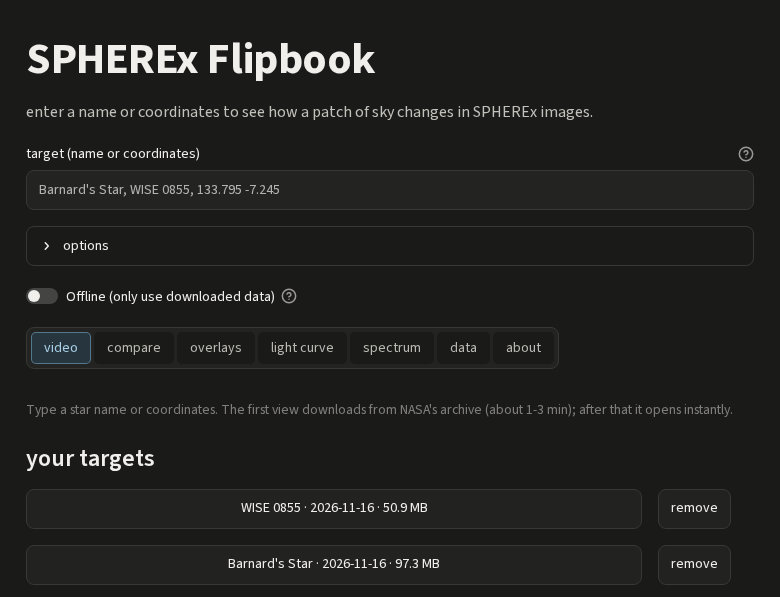
To use the library from Python, see the tutorial notebook and the API guide.